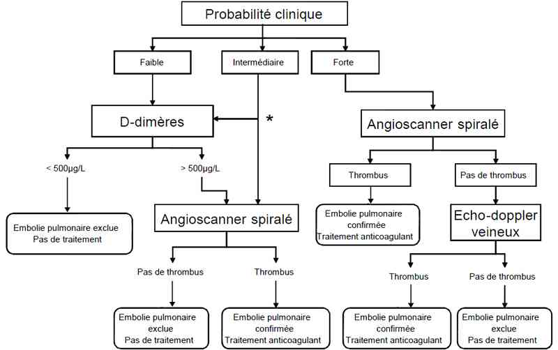

Bienvenue Sur Medical Education
Embolie pulmonaire
Spécialité : cardiologie / vasculaire /
Points importants
- Pathologie fréquente (40 000 cas par an en France) dont l'incidence augmente de façon exponentielle avec l'âge
- Les décès par EP restent très fréquents, la majorité étant secondaires à des EP méconnues
- Une EP doit être évoquée devant toute dyspnée ou douleur thoracique non formellement expliquée
- Toute suspicion clinique doit conduire à des investigations et à un diagnostic de certitude (exclusion ou confirmation)
- Le logiciel SPEED téléchargeable sur www.thrombus.fr peut être une aide.
- L'appréciation du niveau de probabilité clinique (faible, intermédiaire, fort) est impératif pour guider la démarche diagnostique
- En cas de forte probabilité clinique, le traitement anticoagulant doit être débuté sans attendre le résultat des examens complémentaires
- Lorsque la probabilité clinique est faible, un dosage des D-dimères permet d'exclure le diagnostic, lorsque la probabilité est intermédiaire, uniquement les tests très sensibles en particulier ELISA permettent d'exclure une EP de façon fiable et un test D-dimère est inutile si la probabilité clinique est forte
- Un angioscanner positif ou une échographie veineuse montrant une thrombose proximale permettent de retenir le diagnostic
- Un angioscanner multibarette négatif permet d'exclure une EP, seul si la probabilité clinique n'est pas forte, en association avec une échographie veineuse négative si la probabilité clinique est forte
- La gravité est appréciée par l'état hémodynamique, le contexte (score PESI) et éventuellement les marqueurs biologiques de souffrance cardiaque (Pro-BNP, troponine) et la taille du ventricule droit
- Une fibrinolyse est indiquée en cas d'état de choc
- Dans les autres cas, le traitement repose sur une anticoagulation par HBPM ou fondaparinux, l'héparine normofractionnée en IVSE étant réservée aux patients en insuffisance rénale ou instables
Présentation clinique / CIMU
SIGNES FONCTIONNELS
Généraux
- Fièvre (rare mais possible)
- Sueurs
- Angoisse
Spécifiques
- Dyspnée (brutale ou progressive)
- Douleur thoracique (respirodépendante de type pariétopleural ou de type angineux)
- Douleur abdominale (hypochondre)
- Douleur lombaire
- Malaise (lipothymie, syncope)
- Hémoptysie (rarement massive)
- Douleur d'un mollet
- Arrêt cardiaque
CONTEXTE
Terrain
- Age (augmentation exponentielle après 50 ans)
- Obésité
- Grossesse ou post-partum
- Insuffisance veineuse (varices, dermite ocre, ulcères veineux)
Traitement usuel
- Contraception orale (oestroprogestatifs)
- Traitement hormonal
- Traitement neuroleptique ou antidépresseur
Antécédents
- ATCD thrombo-emboliques personnels
- ATCD thrombo-emboliques familiaux premier degré sans facteur favorisant
- Cancer actif
- Pathologie inflammatoire chronique (lupus, Behçet)
- Insuffisance cardiaque congestive
- Déficit neurologique incluant un membre inférieur (datant de moins de 3 mois)
- Thrombophilie biologique connue
Facteurs de risque
-
Eléments récents (dans le dernier mois) :
- alitement
- hospitalisation
- intervention chirurgicale
- traumatisme d'un membre inférieur
- immobilisation d'un membre inférieur (plâtre)
- long voyage (> 6 heures)
- abord veineux central (pace maker, cathétérisme...)
-
. Facteurs de risque de mortalité :
- cf. Score PESI
EXAMEN CLINIQUE
Pulmonaire
- Cyanose (rarement marquée)
- Tachypnée (prendre la FR sur 1 min)
Cardio-vasculaire
- Tachycardie
- HoTA (signe de gravité)
Signes d'insuffisance cardiaque droite par coeur pulmonaire aigu (signe de gravité)
- Galop droit
- Eclat du B2 au foyer pulmonaire
- Souffle systolique d'insuffisance tricuspidienne
- Hépatomégalie douloureuse
- Reflux hépato-jugulaire ou turgescence jugulaire
Signes de thrombose veineuse
- Œdème d'un mollet (différence de diamètre > 2 cm)
- Œdème asymétrique de l'ensemble d'un membre inférieur
- Douleur à la palpation profonde du mollet en regard du réseau veineux profond
Signes d'insuffisance veineuse chronique
- Varices
- Dermite ocre
EXAMENS PARACLINIQUES SIMPLES
SpO2
- Souvent modérement diminuée
- Parfois normale
ECG
- Permet d'éliminer un SCA
- Habituellement normal ou anomalies non spécifiques
- Tachycardie sinusale, tachyarythmie (ACFA)
-
Signes de coeur pulmonaire aigu :
- onde P pulmonaire
- déviation axiale droite
- bloc de branche droit
- S1Q3T3 (peu fréquent et non spécifique pour affirmer ou infirmer le diagnostic)
ESTIMATION DE LA PROBABILITE CLINIQUE
- Indispensable pour guider la prise en charge diagnostique et interpréter les résultats des examens
- Estimation à l'aide d'un score :
- Estimation empirique (probabilité faible - intermédiaire - forte)
CIMU
Tri 2 => installation en SAUV
-
Si suspicion d'embolie pulmonaire avec signes de gravité :
- HoTA
- sensation de mort imminente
- détresse respiratoire
- syncope, lipothymie
- tachycardie > 120/min
Tri 3 => installation sur brancard - box
- Si suspicion d'embolie pulmonaire sans signes de gravité
Signes paracliniques
EXAMENS PARACLINIQUES COURANTS (ASPECIFIQUES)
Biologiques
- NFS plaquettes (évaluation préthérapeutique)
- TP, TCA (évaluation préthérapeutique - exceptionnellement utile)
- INR (si patient sous anticoagulant)
- Ionogramme sanguin, urémie, créatininémie (recherche d'une contre-indication à un angioscanner et aux HBPM)
-
Gaz du sang artériels non systématiques (aident peu au diagnostic - peuvent être normaux - effet shunt présent dans la plupart des pathologies respiratoires : pneumopathie, insuffisance cardiaque, asthme...) :
- hypoxémie par effet shunt (PaO2 + PCO2 < 120 mmHg)
- alcalose respiratoire
- acidose métabolique si état de choc (dans ce cas, calculer le trou anionique et demander les lactates
- Lactates (si état de choc - signe de gravité)
Imagerie
-
Radio de thorax (au lit si signe de gravité) :
- permet d'exclure une autre cause évidente (pneumopathie, pneumothorax...)
- le plus souvent normale (dyspnée importante et RP normale = en faveur d'une EP) ou anomalie parenchymateuse non spécifique
-
signes possibles :
- atélectasie
- épanchement pleural
- infarctus pulmonaire (opacité à base pleurale = bosse de Hampton)
- surélévation d'une coupole diaphragmatique
- oligémie focale (signe de Westermark)
PARACLINIQUES SPECIFIQUES
- Le choix de la stratégie diagnostique appropriée doit tenir compte de la probabilité clinique ainsi que l'interprétation des résultats des tests
- Une aide peut être apportée par le logiciel SPEED téléchargeable sur www.thrombus.fr
Biologiques
-
D-dimères :
- valeur uniquement en cas de test négatif (< 500 ng/mL)
- pas de valeur chez les patients anticoagulés
-
pas d'intérêt lorsqu'il y a plusieurs (2 ou plus) éléments majorant le taux de D-dimères :
- âge > 75 ans
- cancer actif
- 2e et 3e trimestres de grossesse
- post-partum
- traumatisme sévère
- sepsis ou pathologie inflammatoire en poussée
- chirurgie récente
-
interprétation : tenir compte de la probabilité clinique et de la technique de dosage utilisée :
- probabilité clinique faible : un dosage des D-dimères négatif permet d'exclure le diagnostic
- probabilité clinique intermédiaire : uniquement les tests très sensibles en particulier ELISA permettent d'exclure une EP de façon fiable en cas de négativité
- probabilité clinique forte : un test D-dimère est inutile et non fiable
Scintigraphie pulmonaire de ventilation-perfusion
-
Principes et signes retrouvés :
- injection IV d'agrégats d'albumine marqués au 99 mTechnécium qui vont obstruer pendant quelques heures une fraction du réseau précapillaire pulmonaire, complétée éventuellement d'une scintigraphie de ventilation consistant à faire inhaler au patient un gaz radioactif ou des aérosols marqués. La distribution de ces particules est analysée par gamma caméra sur au moins 6 incidences pour la perfusion et 3 pour la ventilation
- une EP se traduit par un défaut de perfusion d'autant plus évocateur qu'il est important et n'est pas associé à des anomalies de ventilation dans le même territoire. Le résultat n'est pas « présence ou absence d'EP » mais présenté en terme de probabilité
-
Valeurs diagnostiques :
- une scintigraphie normale permet d'exclure une EP et une scintigraphie quasi normale si la probabilité clinique n'est pas forte (rapport de vraisemblance [RV] 0,05)
- une scintigraphie de faible probabilité permet d'exclure une EP uniquement si la probabilité clinique est faible (30% des résultats ; RV 0,36)
- une scintigraphie de probabilité intermédiaire n'a pas de valeur diagnostique (30% des résultats ; RV 1,20)
- une scintigraphie de forte probabilité (au moins 2 défauts de perfusion segmentaires) permet de confirmer le diagnostic si la probabilité clinique n'est pas faible (RV 18,3)
-
Indications préférentielles :
- femme enceinte sans antécédent respiratoire
- insuffisant rénal
-
Contre-indications :
- pas de contre indication absolue
- peu intéressante chez les patients ayant des antécédents pulmonaires car résultats souvent intermédiaires (BPCO, asthme, anomalie radiologique...)
Angioscanner
-
Principes et signes retrouvés :
- injecter d'un produit de contraste par voie veineuse périphérique et réalisation de coupes scanographiques avec acquisition spiralée permettant une reconstruction volumique. Plus le nombre de barettes d'acquisition est important (4 ou plus), plus il est possible de faire des coupes fines en un temps moindre et de limiter les artéfacts respiratoires
- une EP se traduit par un défaut d'opacification de la lumière vasculaire sur plusieurs coupes concordantes : images en rail, en cocarde, arrêt cupuliforme...
- le scanner permet d'analyser la taille des ventricules à la recherche d'une dilatation du ventricule droit (signe de gravité)
-
Valeurs diagnostiques :
- un angioscanner de bonne qualité mettant en évidence un défect endovasculaire dans une artère segmentaire ou supra permet de confirmer le diagnostic de façon fiable (RV 24,1)
- un angioscanner monobarette négatif permet d'exclure une EP si la probabilité clinique est faible (RV 0,11) ou qu'il est associé à une exploration veineuse des membres inférieurs (échographie doppler ou phléboscanner) négative et que la probabilité clinique n'est pas forte (RV 0,04)
- un angioscanner multibarette négatif permet d'exclure une EP si la probabilité clinique n'est pas forte (RV 0,05) ou qu'il est associé à un autre examen négatif (échodoppler)
-
Indications préférentielles :
- en première intention en cas de probabilité clinique forte
- en cas de D-dimères positifs
-
Contre-indications :
- insuffisance rénale sévère non dialysée
- allergie avérée aux produits de contraste iodés
- insuffisance cardiaque décompensée (OAP)
-
Cas particulier : Grossesse
- irradiation foetale minime si on met un tablier de plomb pour protéger le foetus (moindre que la scintigraphie)
- risque théorique de cancer du sein lié à l'irradiation des glandes mammaires en remaniement
- pendant le 3e trimestre, prévenir du risque théorique et rechercher systématiquement une hypothyroidie chez le nouveau né (transitoire)
Echographie de compression, échodoppler et phléboscanner des membres inférieurs
-
Principes et signes retrouvés :
- l'échographie en temps réel associée ou non au doppler permet d'examiner le réseau veineux et de mettre en évidence un thrombus par la non compressibilité de la veine sous la sonde
- le phléboscanner consiste, le plus souvent au décours d'un angioscanner thoracique, à réaliser des coupes scanographiques abdomino-pelviennes et des membres inférieurs afin d'analyser la veine cave inférieure, les veines iliaques, fémorales, poplitées et parfois sous-poplitées. Une thrombose se traduit par un défaut d'opacification
-
Valeurs diagnostiques :
- les valeurs diagnostiques du phléboscanner sont mal connues et assimilées à celles de l'échographie veineuse
- la mise en évidence d'une thrombose veineuse profonde proximale (veine poplitée ou supra) permet de retenir le diagnostic si la probabilité clinique n'est pas faible (RV 18,2)
- la mise en évidence d'une thrombose distale n'a pas de valeur de confirmation de façon isolée (RV 3,6)
- un examen négatif n'a pas de valeur diagnostique de façon isolée (RV 0,67)
- en cas de probabilité clinique non forte, l'absence de thrombose veineuse proximale associée à un angioscanner monobarette négatif ou à une scintigraphie pulmonaire non diagnostique (probabilité scintigraphique faible ou intermédiaire) permet d'exclure le diagnostic d'EP (RV 0,04)
-
Indications préférentielles en première intention :
- signes cliniques de phlébite
- grossesse
- angioscanner contre-indiqué et scintigraphie non disponible
-
Indications préférentielles en complément :
- probabilité clinique forte : angioscanner multibarette négatif/scintigraphie quasi normale
- probabilité clinique forte ou intermédiaire : angioscanner monobarette négatif/scintigraphie de probabilité faible
-
Contre-indications :
- aucune
Angiographie pulmonaire conventionnelle
-
Principes et signes retrouvés :
- injection d'un produit de contraste de façon sélective dans les troncs de l'artère pulmonaire avec enregistrement sur des films radiographiques ou une analyse numérisée
- le diagnostic positif repose sur un défaut d'opacification endoluminale ou un arrêt cupuliforme du produit de contraste dans une artère de calibre > 2 mm
-
Performances diagnostiques :
- considérée comme examen de référence : un examen négatif permettant d'exclure le diagnostic et un examen positif de le retenir
- ces valeurs diagnostiques seraient équivalentes à celle d'un angioscanner multibarette si celui-ci est réalisé et interprété dans des conditions optimales (ce qui est exceptionnel en situation d'urgence)
-
Indications préférentielles :
- absence d'accès à un examen moins invasif
-
Contre-indications :
- insuffisance rénale sévère non dialysée
- allergie avérée aux produits de contraste iodés
- insuffisance cardiaque décompensée
Echographie cardiaque trans-thoracique
-
. Principes et signes retrouvés :
- recherche d'un thrombus dans les cavités droites ou le tronc de l'artère pulmonaire (exceptionnel)
- recherche de signes de coeur pulmonaire aigu (dilatation du ventricule droit [rapport VD/VG supérieur à 0,60], HTAP, septum paradoxal)
-
Performances diagnostiques :
- la mise en évidence d'un coeur pulmonaire aigu (chez un patient sans antécédent cardiopulmonaire) permet de retenir si la probabilité clinique est forte (RV 5)
- l'absence de coeur pulmonaire aigu n'a pas de valeur d'exclusion (RV 0,59) sauf en cas d'état de choc où elle permet d'exclure une EP comme cause de la défaillance hémodynamique
- en cas d'EP confirmée, la mise en évidence d'un coeur pulmonaire aigu est un signe de gravité
-
Indications préférentielles :
- suspicion d'embolie pulmonaire chez un patient en état de choc
- forte suspicion clinique avec signes d'insuffisance cardiaque droite (si le scanner n'est pas accessible rapidement ou contre-indiqué)
- analyse de gravité en cas d'EP confirmée
-
Contre-indications :
- aucune
ANALYSE DE GRAVITE
- L'analyse de gravité est indispensable à la prise en charge thérapeutique
Evaluation clinique
-
Recherche de signe de choc :
- HoTA - Marbrures
- la présence d'une HoTA caractérise une EP grave à très haut risque de décès
Analyse clinique et du contexte
-
Calcul du score PESI (Pulmonary Embolism Severity Index) :
-
stratification du risque :
- classe 1 (score < 65) et 2 (66 à 85) : faible risque évolutif avec mortalité < 3% à 1 mois
- classe 3 (106 à 85) et 4 (106 à 125) : risque intermédiaire
- classe 5 (> 125) : risque élevé avec mortalité > 10% à 1 mois
-
stratification du risque :
Analyse paraclinique
-
Dosage du BNP ou du NT-proBNP :
- une élévation témoigne d'un risque intermédiaire
-
Dosage de la troponine :
- une élévation de la troponine témoigne d'un risque intermédiaire
-
Recherche d'un coeur pulmonaire aigu à l'échographie ou sur l'angioscanner :
- une dilatation du VD associée à une augmentation du BNP, NT-proBNP ou de la troponine témoigne d'un risque élevé
Diagnostic étiologique
- Voir facteurs favorisants dans l'onglet « Présentation clinique »
Diagnostic différentiel
- Pneumopathie
- Décompensation de BPCO
- Insuffisance cardiaque
- Asthme
- Pneumothorax
- Dissection aortique
- Péricardite
- Infarctus myocardique
- Fracture de côte
- Anxiété
- Douleur pariétale
Traitement
TRAITEMENT PREHOSPITALIER / INTRAHOSPITALIER
Stabilisation initiale (EP suspectée)
- Oxygénothérapie si besoin : QSP SpO2 > 93%
-
En cas d'HoTA :
- pose d'une voie veineuse et perfusion de NaCl 0,9%
- expansion volémique modérée (500 à 1000 mL de NaCl 0,9%)
- dobutamine IVSE en première intention en l'absence d'amélioration
- si choc persistant => noradrénaline IVSE
-
En cas de détresse respiratoire :
- oxygénothérapie à haut débit au masque à haute concentration
- ventilation non invasive en l'absence d'amélioration
- intubation et ventilation assistée en l'absence d'amélioration
-
En cas de forte suspicion d'EP :
- repos strict au lit
- initiation d'un traitement anticoagulant sans attendre confirmation
Traitement (EP confirmée)
- Il dépend de la stratification du risque (analyse de gravité)
-
EP à très haut risque (HoTA - état de choc) :
- repos strict au lit
- fibrinolyse IV
- embolectomie chirurgicale ou endovasculaire : en cas d'échec ou de contre-indication de la fibrinolyse
- monitorage non invasif
-
EP à risque élevé (pas d'HoTA mais défaillance cardiaque droite) :
- repos strict au lit
- héparine normofractionnée IV (bolus et IVSE)
- monitorage non invasif
-
EP à risque intermédiaire (pas d'HoTA, pas de signe de défaillance droite mais contexte à risque : score PESI > 85) :
- repos au lit jusqu'à la mise en place du traitement
- monitorage non invasif non obligatoire
-
anticoagulation initiale :
- HBPM ou fondaparinux
- HNF en cas de contre-indication (insuffisance rénale)
- AVK (à débuter dès J1)
- contention veineuse si thrombose veineuse confirmée ou suspectée
- filtre cave en cas de contre-indication au traitement anticoagulant ou de récidive malgré un traitement bien conduit
-
EP à risque faible (pas d'HoTA, pas de signe de défaillance droite, pas de contexte à risque : score PESI < 86) :
- lever dès l'instauration du traitement
-
anticoagulation initiale :
- HBPM ou fondaparinux
- HNF en cas de contre-indication (insuffisance rénale)
- AVK (à débuter dès J0)
- contention veineuse si thrombose veineuse confirmée ou suspectée
- filtre cave en cas de contre indication au traitement anticoagulant ou de récidive malgré un traitement bien conduit
MEDICAMENTS
Anticoagulants
-
Héparinoïde de synthèse :
-
Fondaparinux (Arixtra®) :
- 5 mg/24 h, 1 fois par jour en SC si poids < 50 kg
- 7,5 mg/24 h, 1 fois par jour en SC si poids entre 50 et 100 kg
- 10 mg/24 h, 1 fois par jour en SC si poids > 100 kg
- contre-indications principales : insuffisance rénale (clairance < 30 mL/min)/thrombopénie à l'héparine/hémorragie
- surveillance : pas de contrôle de l'activité antiXa/numération plaquettaire avant traitement mais pas de contrôle ultérieur systématique
-
héparine de bas poids moléculaire :
- Tinzaparine (Innohep®) : 175 UI anti-Xa/kg, 1 fois par jour en SC (soit poids-10 x 100 mL/j)
- Enoxaparine (lovenox®) : 100 UI/kg SC/12 h soit deux injections par 24 h de 0,1 mL pour 10 kg
-
autres HBPM :
- pas d'AMM dans l'EP
- contre-indications principales : insuffisance rénale (clairance < 30 mL/min) / thrombopénie à l'héparine ou antécédent de thrombopénie à l'héparine/Hémorragie
- surveillance : contrôle activité antiXa (souhaitable si : poids extrême/insuffisance rénale modérée (clairance entre 30 et 60 ml/min)/saignement/réalisation 4 heures après la deuxième injection/activité cible : tinzaparine : 0,87 +/- 0,15 UI/mL ; enoxaparine : 1,20 +/- 0,15 UI/mL
- numération plaquettaire
- avant traitement et 2 fois par semaine
-
Fondaparinux (Arixtra®) :
-
Héparine non fractionnée :
-
héparine sodique IV : bolus = 80-100 U/kg IV sur 10 min puis 400-500 U/kg/24 h en IVSE (Posologie plus faible en cas d'insuffisance rénale)
- adapter la posologie sur l'héparinémie (activité antiXa cible 0,3 à 0,6) ou le TCA (cible 2 à 3 fois le témoin) contrôlés 4 à 6 h après chaque modification et toutes les 24 h
-
héparine calcique SC : 150 UI/kg x 3/24 h
- adapter la posologie sur l'héparinémie (activité antiXa cible 0,3 à 0,6) ou le TCA (cible 2 à 3 fois le témoin) contrôlés 4 h après la deuxième injection de chaque modification
-
contre-indications principales :
- thrombopénie à l'héparine ou antécédent de thrombopénie à l'héparine
- hémorragie
-
surveillance :
- héparinémie ou TCA
- numération plaquettaire (2 fois par semaine)
-
héparine sodique IV : bolus = 80-100 U/kg IV sur 10 min puis 400-500 U/kg/24 h en IVSE (Posologie plus faible en cas d'insuffisance rénale)
Thrombolytiques
- Alteplase (Actilyse®) : 100 mg IVSE sur 2 h
-
Reteplase (Rapilysin®) : 10 UI IVSE sur 30 min x 2
-
contre-indications principales :
- hémorragie active ou récente
- affection néoplasique évolutive cérébrale ou médullaire
- intervention neurochirurgicale, oculaire ou médullaire < 3 semaines
- AVC hémorragique récent
- traumatisme crânien grave
-
contre-indications principales :
Antivitamine K
-
Warfarine (Coumadine®) :
- 8 mg per os dose de départ pour adulte jeune
- 4 mg per os dose de départ pour personne âgée ou de poids < 50 kg
-
Fluindione (Préviscan®) :
- 1 cp 20 mg per os dose de départ pour adulte jeune
- ½ cp dose de départ 10 mg dose de départ pour personne âgée ou de poids < 50 kg
- Début possible dès J0
-
Surveillance :
- posologie à ajuster sur l'INR (cible entre 2 et 3) contrôlé tous les 2 ou 3 jours jusqu'à équilibre puis régulièrement
-
Contre-indications :
- hémorragie active ou récente
- situation à risque hémorragique important
- néoplasie active (préférer un traitement par HBPM prolongé)
- hypersensibilité connue
Dobutamine : commencer à 5 µ/kg/min IVSE
Noradrénaline : commencer à 0,25 mg/h IVSE
Surveillance
CLINIQUE
- FR, PA, FC, SpO2/h
- Scope
- Diurèse/4 h
PARACLINIQUE
Si HBPM
- Activité anti-XA seulement si insuffisance rénale chronique, sujet âgé, obésité
- Plaquettes à J3-J5 (2 fois par semaine)
Si HNF
- TCA à H+4 après début d'administration puis tous les jours et 6 heures après changement de dose
Devenir / orientation
CRITERES D'ADMISSION
- EP avec signe de choc ou détresse respiratoire : hospitalisation en réanimation ou unité de surveillance continue (appel précoce au réanimateur)
- EP à risque élevé (défaillance cardiaque droite) : hospitalisation en unité de surveillance continue
- EP à risque intermédiaire (pas de signe de détresse ni défaillance cardiaque droite mais contexte à risque, personne âgée...) : hospitalisation en milieu médical
- EP à faible risque (score PESI < 86) : UHCD en vue d'une sortie rapide ou hospitalisation en milieu médical
CRITERES DE SORTIE
Traitement à domicile possible si
- EP à faible risque de décès, de récidive ou hémorragique (score PESI < 86)
- Etat clinique stable
- Absence de pathologie associée nécessitant l'hospitalisation
- Fonction rénale normale
- Injection à domicile organisée (infirmière)
- Surveillance de l'International Normalized Ratio et de l'adaptation de la posologie des antivitamines K organisée (médecin traitant contacté)
- Téléphone en cas de saignement ou de signes de récidive
- Education du malade avec bonne compréhension de la maladie, des signes de récidive et de la surveillance biologique
- Observance a priori bonne
ORDONNANCE DE SORTIE
Traitement
- HBPM ou fondaparinux (jusqu'à équilibre des AVK - en pratique pendant 8 à 10 jours)
- AVK (warfarine ou fluindione)
- Bas de contention adaptés
-
Surveillance biologique :
- NFS, plaquettes 2 fois par semaine pendant 2 semaines
- INR à J3, J6...
- Soins infirmiers : injection à domicile ou éducation du patient aux auto-injections
RECOMMANDATIONS DE SORTIE
- Observance
- Risques liés aux interactions médicamenteuses
- Surveillance des symptômes compatibles avec une récidive
- Surveillance symptômes compatibles avec une hémorragie
Mécanisme / description
- Physiologiquement, il existe un équilibre entre la formation de microthrombi (globules rouges, plaquettes, fibrine) permettant l'hémostase locale et la lyse de ces microthrombi dans la circulation veineuse
- Dans les conditions pathologiques (stase veineuse, hypercoagulabilité, inflammation de la paroi vasculaire), cette hémostase locale est perturbée et peut entraîner la formation d'un thrombus important qui peut conduire à la formation d'emboles de grosses tailles qui vont rester bloquer au niveau des vaisseaux pulmonaires
- L'embolie pulmonaire a le plus souvent pour origine des thrombi des membres inférieurs et du pelvis
- Les thrombi viennent se bloquer au niveau des branches de l'artère pulmonaire. Il s'agit le plus souvent de phénomènes multiples répétés et non pas d'un seul épisode embolique
Algorithme
- Algorithme embolie pulmonaire
 _693 Algorithme Algorithme : embolie pulmonaire
Bibliographie
- Torbicki A, Perrier A, Konstantinides S, Agnelli G, Galie N, Pruszczyk P, et al. Guidelines on the diagnosis and management of acute pulmonary embolism: the Task Force for the Diagnosis and Management of Acute Pulmonary Embolism of the European Society of Cardiology (ESC). Eur Heart J 2008 Sep;29(18):2276-315
- Kearon C, Kahn SR, Agnelli G, Goldhaber S, Raskob GE, Comerota AJ. Antithrombotic therapy for venous thromboembolic disease: American College of Chest Physicians Evidence-Based Clinical Practice Guidelines (8th Edition). Chest 2008 Jun;133(6 Suppl):454S-545S
- Edlow JA. Emergency department management of pulmonary embolism. Emerg Med Clin North Am. 2001;19:995-1011
- Le Gal G, Righini M, Roy PM, Sanchez O, Aujesky D, Bounameaux H, Perrier A. Prediction of pulmonary embolism in emergency department : the revised Geneva score. Ann Intern Med. 2006 ;144:165-171
- The Christopher study group. Effectiveness of managing suspected pulmonary embolism using an algorithm combining clinical probability D-dimer testing and computed tomography. JAMA 2006
- Roy PM, Colombet I, Durieux P, Chatellier G, Sors H, Meyer G. Systematic review and meta-analysis of strategies for the diagnosis of suspected pulmonary embolism. BMJ. 2005 July
- Le Gal G, Righini M, Sanchez O, Roy PM, Baba-Ahmed M, Perrier A, et al. A positive compression ultrasonography of the lower limb veins is highly predictive of pulmonary embolism on computed tomography in suspected patients. Thromb Haemost 2006 Jun;95(6):963-6
- Righini M, Le Gal G, Aujesky D, Roy PM, Sanchez O, Verschuren F, et al. Diagnosis of pulmonary embolism by multidetector CT alone or combined with venous ultrasonography of the leg: a randomised non-inferiority trial. Lancet 2008 Apr 19;371(9621):1343-52
- Perrier A, Roy PM, Sanchez O, Le Gal G, Meyer G, Gourdier AL, Furber A, Revel MP, Howarth N, Davido A, Bounameaux H. Multidetector-row computed tomography in suspected pulmonary embolism. N Engl J Med. 2005 Apr 28 ;352(17):1760-8
-
Perrier A
-
-
-
-
-
-
-
-
-
Auteur(s) : Pierre-Marie ROY